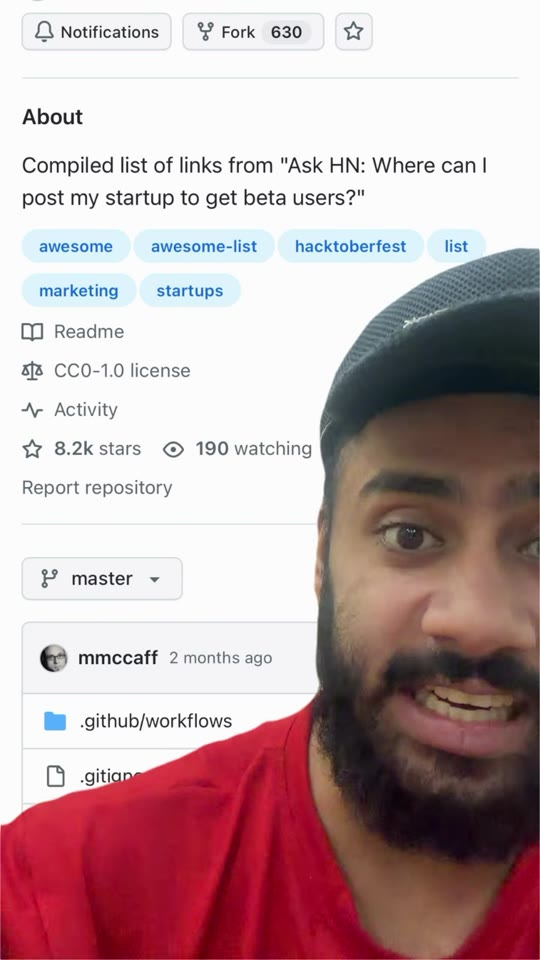
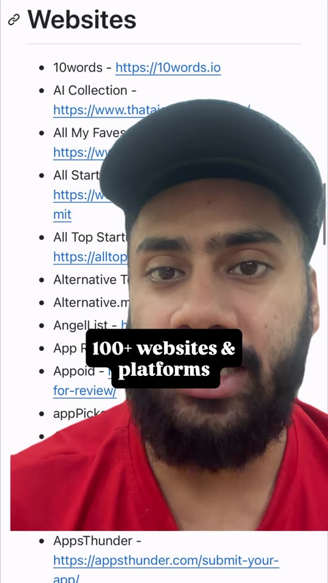
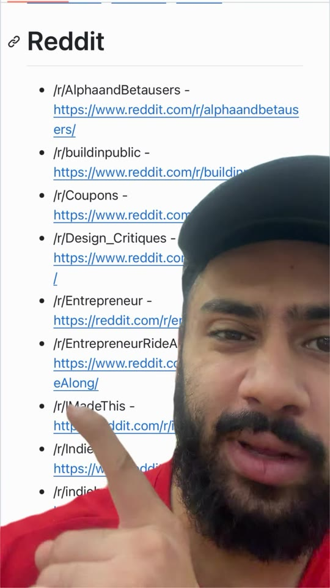

Marketing · Product-Launch
100+ Free Platforms & Subreddits to Launch Your Startup
Library / Marketing / Product-Launch
A breakdown of an 8,200-star GitHub repository indexing over 100 free directories, submission platforms, and subreddits for acquiring early beta users and initial paying customers for new software products. Emphasizes a core launch discipline: rather than blasting every directory on launch day, stagger submissions over several weeks to build compounding referral traffic and longer organic discovery.

Steps
- Access the Master Launch Directory: Open the open-source repository
mmccaff/places-to-post-your-startup, which consolidates user-submitted launch sites from Hacker News. (00:02) - Submit to Startup & AI Product Directories: Submit your landing page to general and AI-specific discovery catalogs (e.g. 10words, That AI Collection, All My Faves, All Top Startups, AlternativeTo, Alternative.me, AppPicker, AppsThunder, Startup Ranking, Startup Stash, Product Hunt, BetaList). (00:04–00:15)
- Share in Feedback-Friendly Subreddits: Post targeted requests for feedback in creator-friendly communities:
r/AlphaandBetausers,r/buildinpublic,r/IMadeThis,r/Design_Critiques,r/Entrepreneur,r/EntrepreneurRideAlong, andr/IndieBiz. Review each subreddit's guidelines prior to posting. (00:16–00:23) - Execute a Staggered Launch Schedule: Avoid submitting to all platforms on day one. Schedule submissions across 2–4 weeks to sustain steady inbound visits and maintain consistent referral flow. (caption)


Verbatim
| When | Where | Text |
|---|---|---|
| 00:00–00:03 | screen | About · Compiled list of links from "Ask HN: Where can I post my startup to get beta users?" awesome · awesome-list · hacktoberfest · list · marketing · startups CC0-1.0 license · 8.2k stars · 630 forks github.com/mmccaff |
| 00:04–00:15 | screen | Websites · 100+ websites & platforms • 10words - https://10words.io • AI Collection - https://www.thataicollection.com/ • All My Faves - https://www.allmyfaves.com/ • All Startups - https://www.allstartups.info/submit • All Top Startups - https://alltopstartups.com/ • Alternative To - https://alternativeto.net/ • Alternative.me - https://alternative.me/ • Angellist - https://angel.co/ • App Rater · Appoid · appPicker · Apps Listo • AppsThunder - https://appsthunder.com/submit-your-app/ |
| 00:16–00:23 | screen | Reddit • /r/AlphaandBetausers - https://www.reddit.com/r/alphaandbetausers/ • /r/buildinpublic - https://www.reddit.com/r/buildinpublic/ • /r/Coupons - https://www.reddit.com/r/Coupons/ • /r/Design_Critiques - https://www.reddit.com/r/Design_Critiques/ • /r/Entrepreneur - https://reddit.com/r/Entrepreneur/ • /r/EntrepreneurRideAlong - https://www.reddit.com/r/EntrepreneurRideAlong/ • /r/IMadeThis - http://reddit.com/r/IMadeThis/ • /r/IndieBiz - https://www.reddit.com/r/IndieBiz/ |
| 00:27 | screen | Startup Ranking - https://www.startupranking.com/ Startup Stash - https://startupstash.com/ Startup Tabs - https://startuptabs.com/ Startup Tracker - https://startuptracker.io/ Startups Gallery - https://startups.gallery/ |
| — | caption | Built a startup or SaaS but don’t know where your first users will come from? This GitHub repo is a goldmine. 🔥 It’s a big list of 100+ places where you can launch your product and get in front of early users: 🟠 Reddit: subreddits where founders can share what they’ve built (read each community’s rules first) 🚀 Launch platforms like Product Hunt and BetaList 🌐 Dozens of other directories and communities, and many of them are free One tip most people miss: don’t launch on everything on the same day. Spread your launches across different platforms over a few weeks, so new people keep discovering your product for longer. Comment ‘REPO’ and I’ll send you the GitHub link in your DM. 👇 |
Tools & links
- mmccaff/places-to-post-your-startup — Master repository of startup launch links — github.com/mmccaff/places-to-post-your-startup
- Creator profile — @gagantalksbiz (Gagan - AI & SaaS Growth) — instagram.com/gagantalksbiz
Try this
- Create a spreadsheet tracking 10 launch directories from the repo, submit to 2 directories per week, and monitor referral sessions in Google Analytics.
- When posting on
r/AlphaandBetausers, state your target problem clearly in the title and provide a frictionless signup link without mandatory paywalls.
Open questions
The video requires commenting 'REPO' to receive the link via Instagram automated DM; the repository is public at github.com/mmccaff/places-to-post-your-startup.